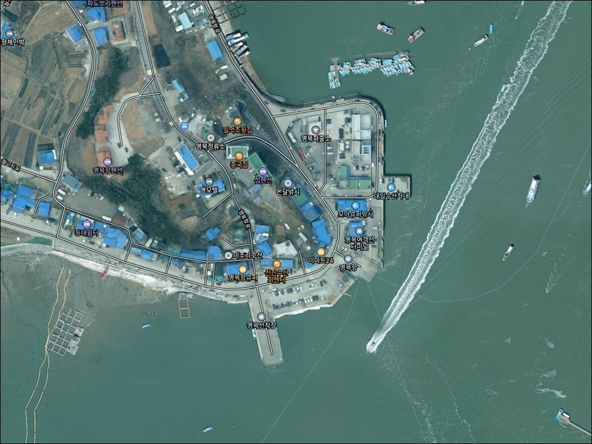
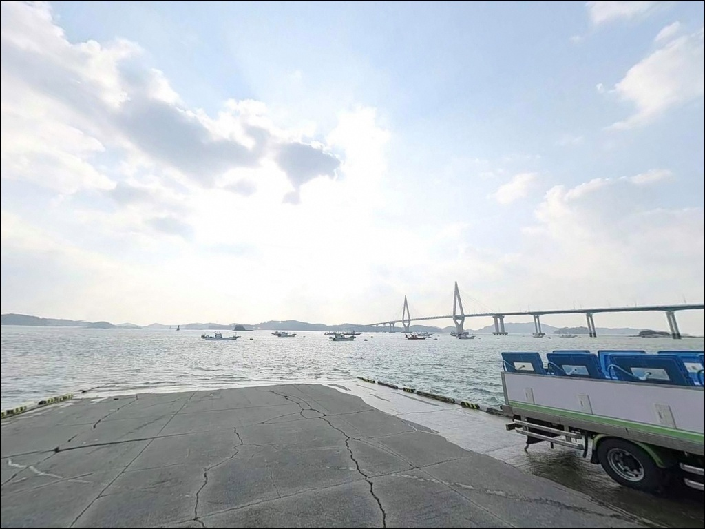
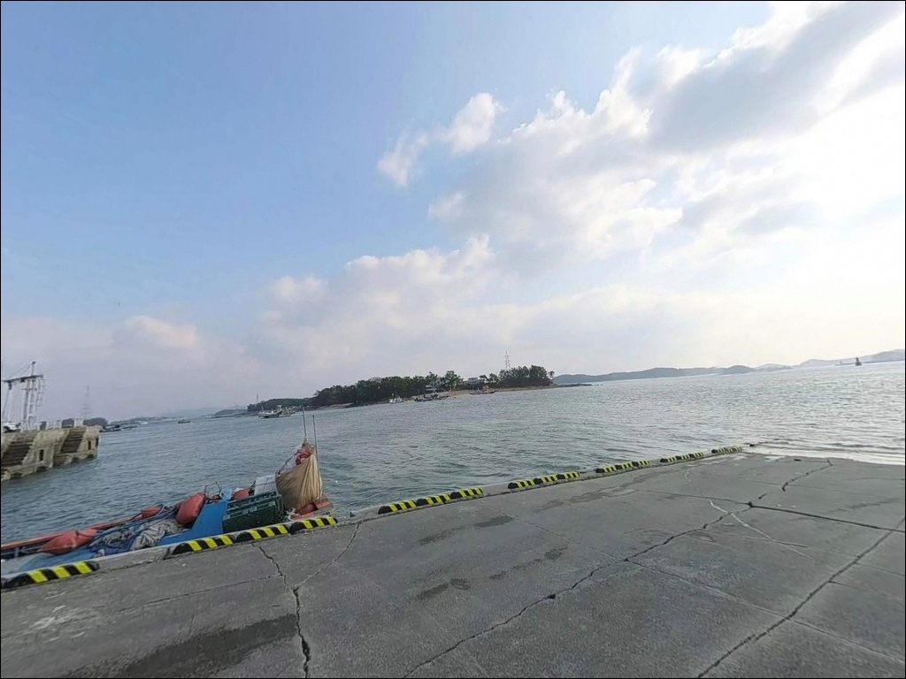
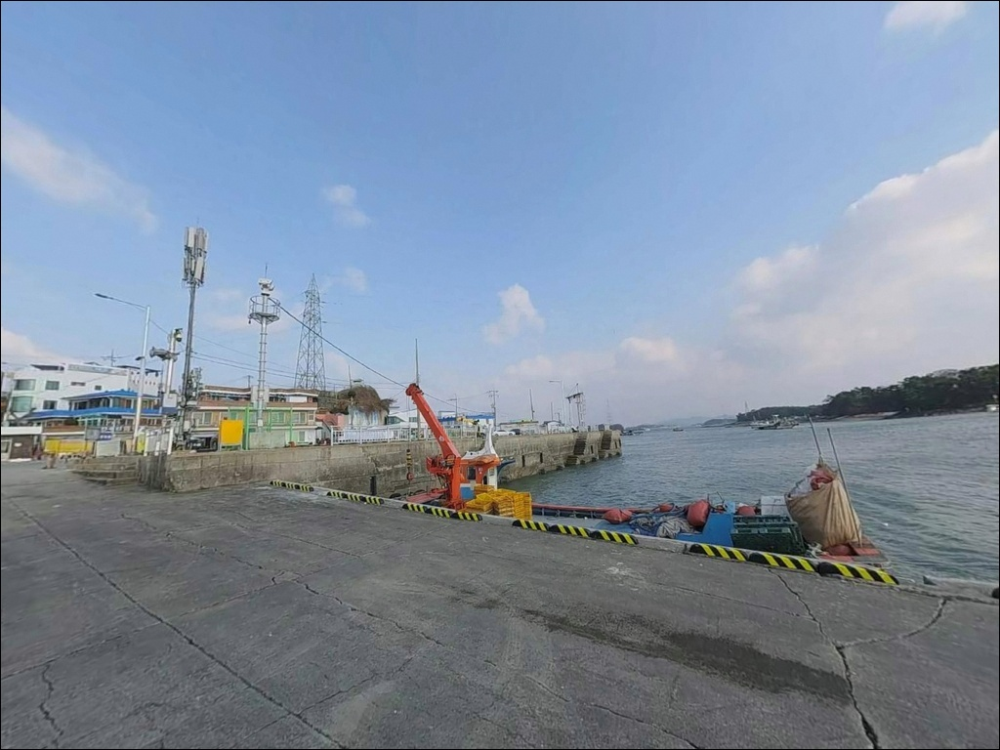
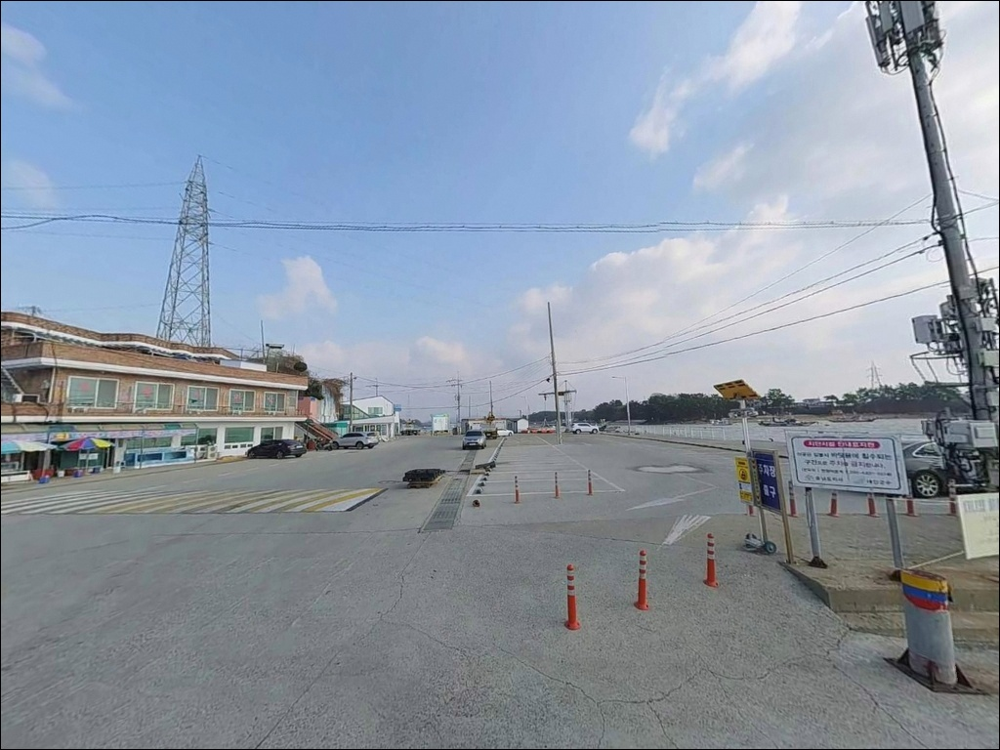
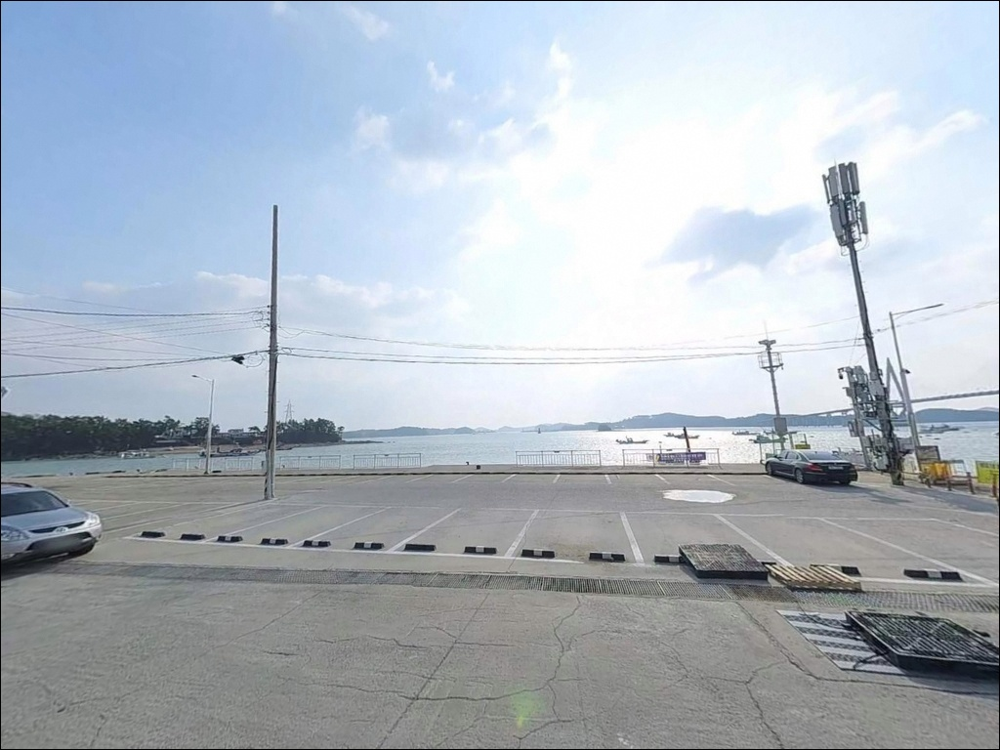
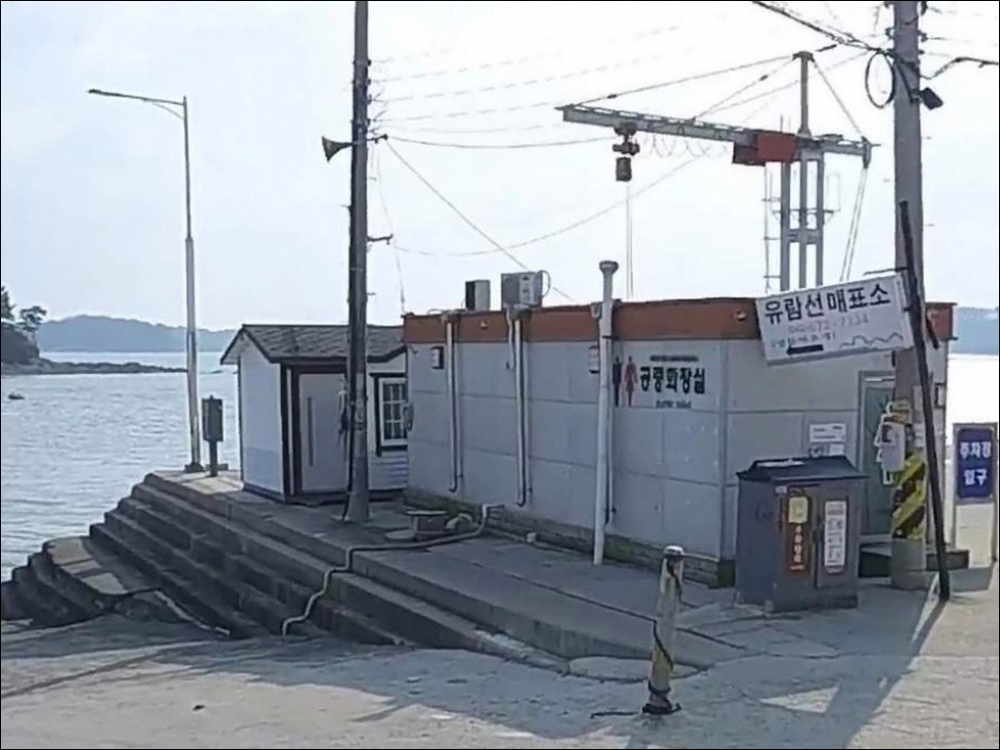
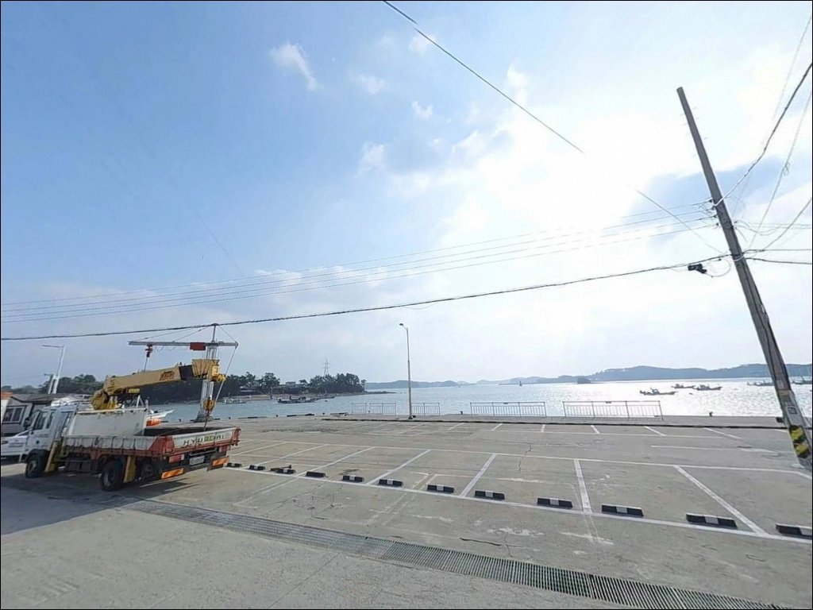
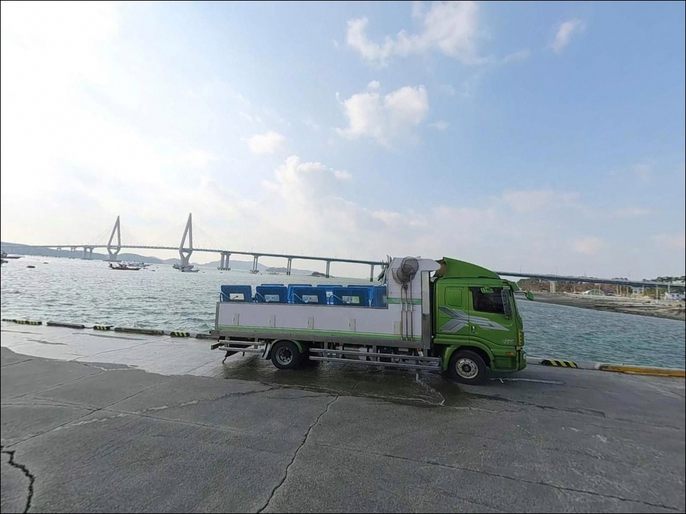

영목항 (영목선착장), 충남 태안군 자연 그대로의 분위기에서 차박, 낚시를 즐기기 좋은 포인트
이 페이지에는 광고(제휴 링크 포함)가 있으며, 광고 링크를 통해 구매하면 운영자가 판매 수익 또는 수수료를 받을 수 있습니다. 포인트 사진: 카카오맵 스카이뷰·로드뷰. 이 페이지의 지도·사진 이미지는 카카오맵의 실제 서비스 이미지와 다를 수 있습니다.


포인트 안내
영목항
충남 태안군 고남면 고남리 346-7
서해 방파제 포인트에서 가장 많이 놓치는 판단은
조류 세기를 물때와 함께 계산하지 않고 출발하는 것입니다.
영목항은 낙조류가 우세한 구조로,
사리 전후 잘못된 타이밍에 도착하면
어떤 채비를 써도 흘러내리기만 하는 상황이
이어질 수 있습니다.
충남 태안군 고남면 고남리,
안면도 최남단에 자리한 영목항은
2021년 국가어항으로 지정된 서해 대형 어항입니다.
방파제와 선착장이 복합적으로 갖춰져 있으며,
주꾸미·갑오징어 에깅 포인트로
서해권 낚시인에게 오랫동안 알려진 곳입니다.
이 글은 영목항의
진입 동선, 차박 여건, 물때 판단 기준,
낚시 스타일별 공략 조건에 집중합니다.
조황 단정이나 특정 어종 보장은
이 글의 범위에 포함되지 않습니다.

1. 진입 동선과 포인트 접근성
영목항은 안면도 남단 지방도 649호선의
종점부에 해당하는 위치입니다.
안면도 본섬에서 이어지는 도로가
항구 진입로까지 포장되어 있어
일반 승용차와 SUV 모두 접근에
큰 어려움은 없는 편입니다.
다만 항구 진입로 일부 구간은
폭이 좁아질 수 있어
대형 캠핑카나 캐러밴이라면
사전에 위성지도로 도로 폭을
확인하고 출발하는 편이 좋습니다.
항 내부는 국가어항 규모답게
회차 공간이 비교적 넉넉한 구조로
일반 차량은 무리 없이 회차가 가능해 보입니다.
주차는 선착장 접안 시설 인근 공터와
방파제 초입 도로변이 주요 후보입니다.
배낚시 출항 이용객 차량이 몰리는 시간대에는
주차 공간 경쟁이 생길 수 있으므로
이른 시각 진입이 자리 확보에 유리합니다.
어선 출입 동선을 막지 않는 자리가
기본 원칙입니다.

2. 차박 환경과 야간 체류 여건
영목항은 국가어항이자 안면도 관광 명소를
겸하는 포인트입니다.
항 인근에 영목항 전망대가 있어
야간에도 방문객과 차량 왕래가 있는 편이며,
완전히 조용한 독립 차박 환경을
기대하기는 어렵습니다.
가로등은 선착장 주변 일부 구간에
설치되어 있을 가능성이 있어
야간 낚시 접근성 자체는 나쁘지 않은 편입니다.
다만 어선의 이른 새벽 출항이 있을 수 있어
새벽 엔진 소음을 감안해야 합니다.
낚시 후 잠시 머무는 용도라면
무리 없는 수준이지만,
차박 자체를 메인으로 계획한다면
영목항보다 조용한 환경을 찾는 편이 낫습니다.
항 주변에는 펜션과 민박이 여럿 있어
숙소를 기점으로 낚시를 병행하는 방식도
이 포인트에서는 현실적인 선택입니다.
개인 조명 장비는
야간 낚시와 차박 모두에서
기본으로 준비해야 할 항목입니다.


3. 주변 편의시설 및 인프라 현황
영목항 주변에는 수산물 판매장과
식당이 항 인근에 모여 있습니다.
낚시 후 간단한 식사나 해산물 구매는
현장에서 해결할 수 있는 구조입니다.
항 인근 영목항 어촌체험마을과
펜션·민박 시설도 여럿 분포해 있어
식사와 숙박 인프라는
안면도 남단 기준으로는 양호한 편입니다.
편의점이나 주유소에 대한
확정 정보는 파악되지 않으므로
식수·연료·낚시 소품은
출발 전에 챙겨두는 편이 안전합니다.
고남면 소재지 방향으로 이동하면
기본 생활 인프라를
추가로 찾아볼 수 있는 구조입니다.
영목항 내에는 해양파출소가 위치하고 있으며,
항 인근 언덕에는 영목항 전망대가
설치되어 있습니다.
응급 상황을 대비해 출발 전
가장 가까운 의료기관 위치를
별도로 확인해 두는 것이 기본 준비입니다.

4. 방문 전 반드시 챙겨야 할 준비사항
영목항 방문에서 가장 먼저 확인할 항목은
물때입니다.
영목항은 낙조류(남향)가 창조류(북향)보다
강한 구조로, 낙조 구간에
채비가 외항 방향으로 자연스럽게 흘러가는
흐름이 형성됩니다.
바다타임에서 고남면 기준 물때를 확인하고
조금 전후 또는 초들물 타이밍을
맞춰 출발 시각을 정하는 것이 기본 전략입니다.
항구 인근에는 크고 작은 간출암과
양식장이 분포하는 구조입니다.
양식장 인근 수역은 진입을 삼가야 하며,
바닥 채비 사용 시 밑걸림이 생길 수 있어
여분 채비는 넉넉하게 준비하는 편이 좋습니다.
갯바위 구간 접근 시에는
갯바위화 또는 방수 장화가 필수이며,
구명조끼는 방파제·선착장·갯바위
모든 구간에서 착용이 기본입니다.
대형 여객선과 어선의 입출항이
이루어지는 항구입니다.
항로 방향으로 채비를 던지지 않도록
자리를 잡기 전에 선박 통행 방향을
먼저 확인하는 것이 매너이자 안전입니다.
야간 입장 시에는 헤드랜턴을
반드시 준비해야 합니다.

5. 물때에 따라 외항 조과가 달라지는 이유
영목항의 낚시 여건을 이해하려면
조류 구조를 먼저 파악해야 합니다.
낙조류가 창조류보다 우세한 구조로,
낙조 시 채비가 외항 방향으로
자연스럽게 흘러가는 흐름이 형성됩니다.
낙조류 구간에 외항 방향 캐스팅을 맞추면
채비 컨트롤이 상대적으로 수월해지는 구조입니다.
방파제는 외항과 내항이 뚜렷하게 구분되는 형태입니다.
외항 쪽은 조류 영향을 직접 받아
수심 변화가 생기는 구간이 형성되며,
방파제 끝단으로 갈수록 더 깊어지는
경향이 있어 보입니다.
내항은 잔잔한 편으로
가벼운 채비나 찌낚시에
어울리는 환경입니다.
방파제 외항 끝단은 조류 변화가 뚜렷해
루어와 원투낚시 모두 조과가 달라지는 자리입니다.
항구 인근에는 소도 갯바위(약 300m),
추도 갯바위(약 630m),
고남리 동방파제(약 840m)가 있습니다.
소도 갯바위는 바닥이 모래 성분으로
중들물~중날물 타이밍에
노래미·붕장어 원투를 기대해 볼 수 있는 구간입니다.
단, 저조 시 수심이 매우 얕아질 수 있어
물때 확인이 선행되어야 합니다.
최신 조황은 출발 전에
꼭 별도로 검색해 확인하시기 바랍니다.


6. 영목항 지형에 어울리는 낚시 스타일
이 포인트에서 가장 잘 맞는 낚시는
주꾸미·갑오징어 에깅입니다.
서해 특성상 여름 후반부터 가을까지
주꾸미 시즌이 활발하게 형성되며,
외항 방파제 구간에서
워킹 방식으로 에기를 탐색하는 접근이
이 지형과 잘 맞는 편입니다.
조류가 느려지는 정조 타이밍에
입질 집중도가 올라가는 경향이 있습니다.
원투낚시는 소도 갯바위 모래 지형과
방파제 외항 구간 모두에서
노려볼 수 있는 방식입니다.
붕장어와 노래미를 기대해 볼 수 있으며,
조류가 강한 구간에서는
유선형 봉돌이나
고중량 채비가 유리한 편입니다.
루어낚시도 이 포인트와 잘 맞는 스타일입니다.
방파제 외항 방향에서
메탈지그나 미노우 계열로
회유성 어종의 시즌에 대응할 수 있으며,
석축이나 구조물 주변에서는
웜 지그헤드 채비로 우럭을 탐색하는
방식도 어울립니다.
내항 잔잔한 구간에서는
가벼운 릴찌나 민장대 채비로
숭어·노래미를 노려볼 수 있습니다.

7. 대안 포인트와 플랜 B 동선
영목항 여건이 좋지 않거나
주차가 여의치 않을 때는
고남리 동·서 방파제가 첫 번째 대안입니다.
영목항 기준으로 1km 이내 거리에 있어
이동 부담이 적고,
방파제 낚시 여건이 갖춰진
안면도 남부 핵심 포인트입니다.
같은 해안선 기준으로
소도 갯바위와 추도 갯바위도
대안으로 고려할 수 있습니다.
단 갯바위 접근 시에는
물때에 따른 수위 변화가 크므로
저조 시 접근 여부를 현장에서 판단해야 합니다.
안면도 서쪽 꽃지 해수욕장 방파제는
돌가자미 원투낚시 포인트로
알려진 구간으로,
초들물~중들물 타이밍에 집중하면
나은 결과를 기대해 볼 수 있습니다.
영목항에는 선상낚시 업체가
다수 상주하고 있습니다.
도보 낚시 여건이 좋지 않은 날에는
배낚시로 전환하는 방식이
현실적인 플랜 B입니다.
조용한 차박 환경을 원한다면
꽃지 해수욕장 방면으로 이동하는 방식을
고려해 볼 수 있으나,
성수기 혼잡 여부를 먼저 살펴야 합니다.

물때 하나로 달라지는
영목항의 낚시 여건
주꾸미·갑오징어 에깅을 즐기는 낚시인이라면
영목항 외항 방파제 구조는
시즌 중 한 번쯤 공략해볼 만한 조건을 갖추고 있습니다.
낙조류 구간에 맞춰 외항 방향으로
에기를 탐색하는 방식이
이 포인트 지형에 잘 어울리며,
원투낚시와 루어낚시까지 병행할 수 있어
복수 스타일을 즐기는 낚시인에게도
선택의 폭이 넓은 편입니다.
반면 물때 확인 없이 사리 전후에 도착하거나
선착장 혼잡 시간대에 주차 없이 오면
낚시를 시작하기도 전에
헛걸음이 되는 상황이 만들어집니다.
물때 확인, 조류 세기 파악, 진입 시각 조정,
이 세 가지가 영목항을 제대로 활용하는
기본 조건입니다.
낚시를 마치고 바다 가까이 하룻밤 머물고 싶은
차박 낚시인에게는
영목항을 기점으로 고남리 방파제까지
이어서 탐색하는 동선이
안면도 남단에서 낚시와 차박을
가장 알차게 엮는 방법이 될 것입니다.